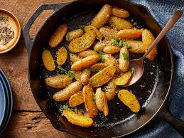

Home
Roasted Garlic-Parmesan Fingerling Potatoes

Description
Fingerlings have a natural hint of sweetness that makes them a nice alternative to other potatoes.
Ingredients
- 1 pound fingerling potatoes, halved lengthwise
- 2 cloves garlic, minced
- 2 tablespoons grated Parmesan cheese
- 1 teaspoon lemon zest
- ½ teaspoon salt
- ¼ teaspoon freshly ground black pepper
- 2 tablespoons olive oil
- 1 tablespoon butter
- 2 tablespoons chopped fresh parsley